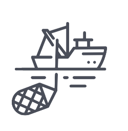
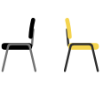
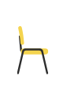
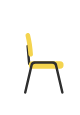

5 PHASES
MULTIPLY DISCIPLES LIKE JESUS

“Come, follow me,” Jesus said, “and I will make you fishers of men.” At once they left their nets and followed him. — Matthew 4:19
Ministry
Foundations
Ministry
Training
Expanded
Outreach
Leadership
Multiplication
Preparation
Period
Movement of
Multiplying
Disciples
Birth and Proclamations
Jesus in the Temple
John’s Testimony
Baptism/Temptation
First followers
Wedding at Cana
First Temple
Cleansing
Nicodemus
Samaritan Woman
Rejection at Nazareth
Call of the Four
6 Fishing Trips
Call of Matthew
6 Fishing Trips
Synagogue
Peter’s House
Open Air
Leper
Home with Pharisees
Matthew’s House
Appointment of the Twelve
Sending of the Twelve
Sending of the Seventy-Two
Jerusalem, Judea, Samaria and the Ends of the Earth
Dispersal
Paul’s Missionary Journeys
PHASE 1
PHASE 2
PHASE 3
PHASE 4
PHASE 5

“COME & SEE”
“FOLLOW ME”

“FOLLOW ME & FISH FOR MEN”

“GO & BEAR FRUIT”
18-21 MONTHS
Relationships
24-30 MONTHS
Team Building + Leader Identification
39-45 MONTHS
Leadership Multiplication
Mission and Motive
Product and Process
The Man of Peace
Appoint Leaders
Restructure for Multiplication
Be with Them